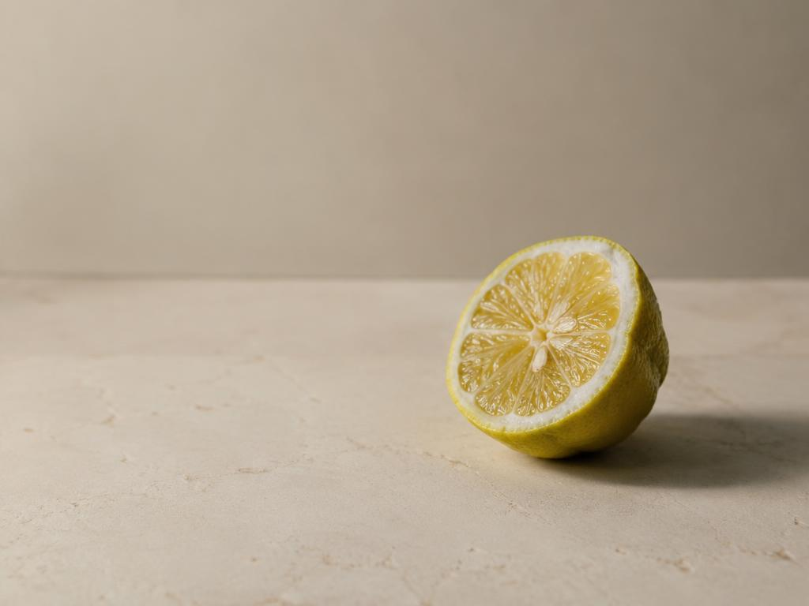

REVISTA DE PERFUMERÍA
Descubrir un aroma es descubrir una historia
Guías, ingredientes e historias para explorar la perfumería a tu ritmo.
Explorar artículosSELECCIÓN EDITORIAL
Lecturas destacadas
FRAGANCIAS REALES, MIRADA EDITORIAL
Perfumes para descubrir
Una pequeña selección de fragancias conocidas para ponerle nombre a los acordes que aparecen en los artículos. Sin precios ni compras: solo historias y criterio olfativo.
PARA SEGUIR DESCUBRIENDO